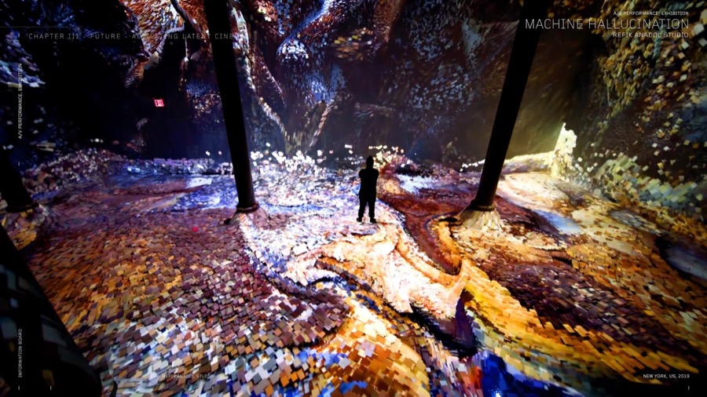
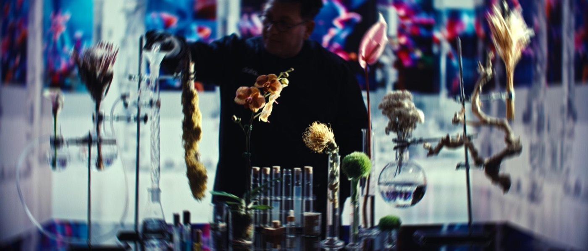

Can AI be creative?
We started with a poll: on a scale from 1 (strongly disagree) to 5 (strongly agree), "AI can be creative." The class did not agree, partly because we had not said what creative means. Creativity research gives us two useful tools.
A simple test: new and useful
The standard definition says something is creative if it is both new and useful (Runco and Jaeger, 2012). Random noise is new, but not useful. A copy is useful, but not new. You need both.
Three kinds of creativity
Margaret Boden (The Creative Mind, 1990) describes three kinds:
- Combining familiar ideas in a new way.
- Exploring a space of possibilities, inside the rules of a style.
- Transforming the space itself, so that new things become possible.
Link to models. A generative model that samples from its latent space is exploring. Most people agree AI can combine and explore. Whether it can transform is the open argument.
What is generative art?
Generative art is art made by a system that the artist designs, which then runs with some autonomy (after Philip Galanter, "What is Generative Art?", 2003).
- The artist designs a system: rules, randomness, limits and inputs.
- The system runs on its own, with some freedom.
- The work comes out. The artist gives up some control: the same rules give a different result each time.
The system can be instructions, a machine, code or a trained model. It does not need a computer.
A short history: what is the system made of?
| When | System | Example |
|---|---|---|
| 1960s | Written rules | Sol LeWitt wrote instructions for wall drawings, such as Wall Drawing 831 (Geometric Forms); assistants draw them, and they can be made again elsewhere. |
| 1960s–70s | Code | Vera Molnar's plotter drawings, such as Interruptions à recouvrements (1969): many short lines with small random changes. Frieder Nake showed computer drawings in 1965. Harold Cohen began AARON in the late 1960s, named it in the early 1970s, and worked on it until he died in 2016. |
| 2000s | Creative coding | Processing (Casey Reas and Ben Fry) made code easy for artists. Six lines can draw two sets of circles whose overlap makes a new pattern. |
| 2010s–now | Learned models | Anna Ridler photographed and hand-labeled about 10,000 tulips and trained a GAN on them (Mosaic Virus, 2019). Then came diffusion models. |
The artist's work shifts: from drawing, to writing rules, to choosing data.
Refik Anadol
Refik Anadol is a media artist and director. He works with data, machine learning and architecture, and his themes are nature, memory, human imagination and shared experience. His studio is in Los Angeles.
Three works
- Unsupervised (studies 2021; MoMA, New York, 2022–23). A model trained on the collection of the Museum of Modern Art makes new images. In the lobby, live data from the room changed them.
- Large Nature Model: Rainforest (NVIDIA GTC, 2024). A model that learned from nature, not from art: our worked example below.
- Echoes of the Earth: Living Archive (Serpentine North, London, 2024). Nature data turned into large moving images and sound.
What does "machine hallucination" mean?
In a chatbot, a hallucination is an answer that sounds right but is made up or wrong. For example, a chatbot might confidently name a winner of the "Nobel Prize in Computer Vision", which does not exist.
Anadol uses the word differently. A machine hallucination is a new image that a model imagines after learning patterns in data. The machine is not dreaming or feeling anything: it makes new combinations of what it learned. In Boden's terms, that is combining and exploring.
From archive to artwork
We reverse-engineered Machine Hallucination: NYC (2019). In: over 100 million public photos of New York. Out: a film across the walls and floor of a room. What happens in between?

- Data: collect it.
- Curate: filter it. For NYC, every photo with a person in it was removed. That choice shapes everything after it.
- Represent: embed it, turning each image into numbers, as in our CLIP lab.
- Generate: train a model that learns to make more images like these.
- Render: move through the model's space over time, so the images flow into each other.
- Display: fit the result to the room.
The Large Nature Model
Most AI learns from human text and images. The Large Nature Model learns from nature. Refik Anadol Studio built it for DATALAND, its museum of AI art in Los Angeles, where it makes the images, sounds and scents of the first exhibition, Machine Dreams: Rainforest. Its data comes from field trips to 16 rainforests and from institutions like the Smithsonian and the Natural History Museum, London: 1.2 billion ecological data points, including more than 100 million images of plants, animals and fungi.
What did it learn from?
| Data | Question it answers | How it was collected | Used for |
|---|---|---|---|
| Images | What does nature look like? | Archives of the Smithsonian, the Natural History Museum (London), Cornell Lab and Getty; AI tools label each species and habitat | Realistic plants, animals and fungi |
| Sound | How does nature change over time? | 360° and binaural microphones over whole days and nights; about 250,000 Amazon birdsongs from Cornell Lab | The gallery soundscapes |
| 3D scans | How is a forest built? | Laser scanners (LiDAR) and photogrammetry; many scans from Ghent University's forest lab | Depth, scale and structure |
| Sensors | What can we not see? | Rainfall, soil moisture, sap flow, temperature and humidity, from Chile, Australia and California | Climate and forest behavior (details not published) |
From field data to Machine Dreams
Collect (archives, field trips, sensors) → Describe (species, habitats, written descriptions) → Train (one model on every kind of data) → Generate (realistic species and abstract "dreams") → Exhibit (images, sound and scent at DATALAND).
Not published: the model's architecture, how it was trained, and how much of each kind of data it used.
Example: the sound pipeline
- Record: 360° microphones in 16 rainforests, plus recordings from Cornell's Macaulay Library, mostly of Amazonian birds.
- Tag: pre-trained audio networks label what is in each recording.
- Generate: an audio latent diffusion model, trained on unlabeled nature sounds, makes new sound. It is the same idea as the image models: diffusion in a latent space, but for audio.
- Play: a 250-channel sound system in the gallery.
Not published: how many hours of sound, and the model's details.
Beyond images: sound, scent and flavor
Generative art does not have to be a picture.
- Sound. Field recordings and birdsong become the soundscapes visitors hear.
- Scent. L'Oréal's perfumers used the same ecological data to turn visual and environmental patterns into twelve scents. They captured living plants without cutting them (headspace capture, Osmobloom), for example a rare Amazonian moonflower, and used new molecules for abstract ideas.
- Flavor. From data on wild cacao genes and the chemistry of flavor, the model proposed new chocolate recipes. A chef, Valerie Gordon, chose four and made them by hand.

Who is the artist here? The model, the perfumers, the chef, or the studio?
Why build it?
- Feel the data. 1.2 billion data points become something you can see, hear and smell.
- Archive what is disappearing. Record rare plants, like a moonflower that blooms for a single night, before they are gone.
- Collect without harm. Capture a scent from the air around a flower, without picking it.
The same tools, beyond art
These are examples from other fields, not the studio's own work:
- Sound: microphones in the canopy count endangered species and detect chainsaws or gunshots in real time (e.g. Rainforest Connection).
- 3D scans: laser scans measure each tree, to estimate how much carbon a forest stores (e.g. Calders et al., 2015).
- Scent: losing the sense of smell can be an early sign of Parkinson's disease, so precise smell tests could help early screening (e.g. Doty, 2012).
What tools did his studio use?
Only what sources confirm, across his works:
| Stage | Tool | Work |
|---|---|---|
| Data | Google Cloud Storage and BigQuery hold the archive | Large Nature Model |
| Curate | An algorithm removed every photo with a person (which one is not public) | Machine Hallucination: NYC |
| Represent | 1024-dimensional embeddings of the collection | Unsupervised |
| Generate | StyleGAN · StyleGAN2-ADA · NVIDIA Picasso, fine-tuned on nature | NYC · Unsupervised · Large Nature Model |
| Render | Live data from a ceiling camera and a weather station steers it | Unsupervised |
| Compute | Google Cloud GPUs and Vertex AI · NVIDIA DGX A100 | Large Nature Model |
| Display | A 16K film on the walls · a giant LED wall in the lobby | NYC · Unsupervised |
Not public: their rendering software, the people-removal model, and their training settings. Part of reverse-engineering is knowing where the evidence stops.
Lab: become a generative artist
In the Generative System Lab you build a small version of this pipeline on Fashion-MNIST, small pictures of clothes. Like Anadol removed people, you remove the shirts. Run the notebook top to bottom and fill in TODOs 1–5:
| Stage | What happens | TODO |
|---|---|---|
| Data | Look at the images before using them | – |
| Curate | Remove the shirts; train a small CNN; try CLIP zero-shot | 1: the CNN layers · 2: CLIP's best caption |
| Represent | Do CLIP and the CNN see the wardrobe the same way? | 3: correlation of the two RDMs |
| Generate | A VAE or a GAN; did the shirts come back? Is it copying its data? | – |
| Render | Walk through the latent space | 4: slerp between two points |
| Evaluate | Can your partner tell real from generated? | 5: Sobel edge magnitude |
| Display, System | Put it on the wall; the pipeline as a plan of tools | – |
When you finish, submit your Colab link.
Discussion
- Creativity: if a person chooses the prompt but AI creates the image, who is the artist?
- Consent: should AI companies ask artists before using their work to train AI models?
- Ownership: can an AI-generated image be copyrighted? Who should receive the rights?
- Culture: who should decide whether a cultural style can be used by AI?
- Human value: does knowing the story or feelings behind an artwork change how we value it?
- Compute: training and running big models uses a lot of energy. Is the art worth it, and who should pay that cost?
- Evaluation: who decides if AI art is good: the model, the audience, or the art world? What can no metric measure?
Back to the start. From 1 to 5, can AI be creative? Did your answer change? Was Anadol's model creative, or his studio?
Sources
- Runco and Jaeger, "The Standard Definition of Creativity", Creativity Research Journal (2012) · Margaret Boden, The Creative Mind (1990) · Philip Galanter, "What is Generative Art?" (2003)
- Harold Cohen and AARON: Whitney Museum · Computer History Museum
- Refik Anadol Studio videos on Vimeo · MoMA · Serpentine Galleries · Dezeen · Towards Data Science · Google Cloud
- DATALAND blog, "Training AI to Understand Nature" (July 2026) · dataland.art/data-scent · dataland.art/data-chocolate · refikanadol.com/iconiq · NVIDIA AI Art Gallery · Studio International (Aug 2026) · Artnet (Jan 2024) · GCI Magazine
- Photos: Refik Anadol Studio, DATALAND